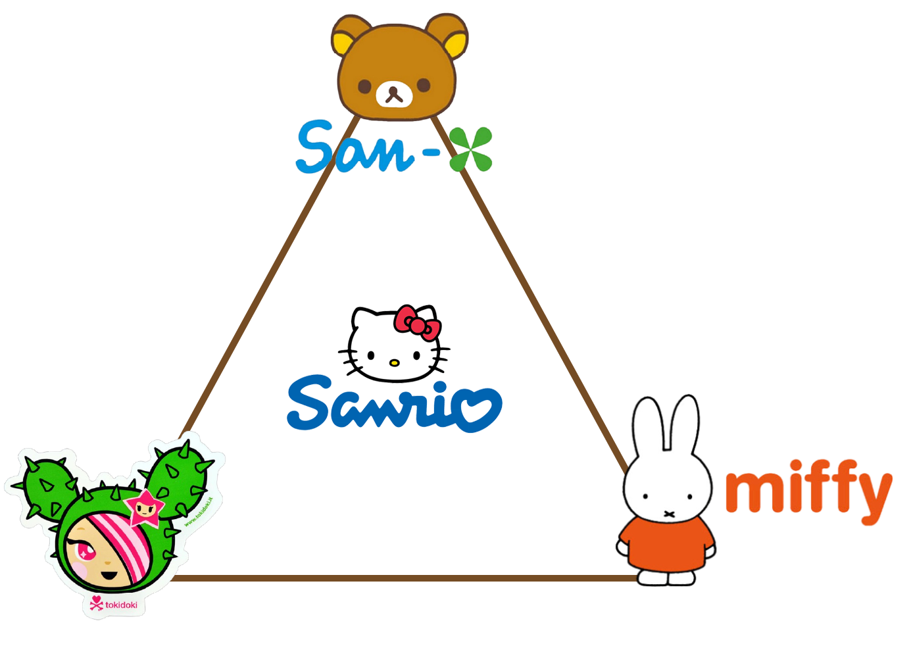
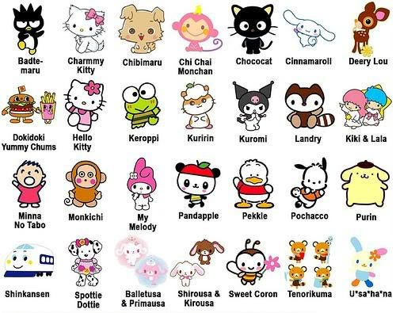
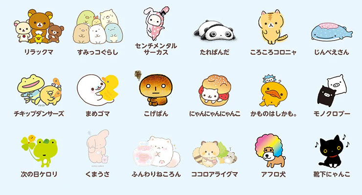
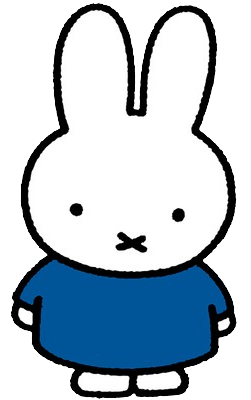
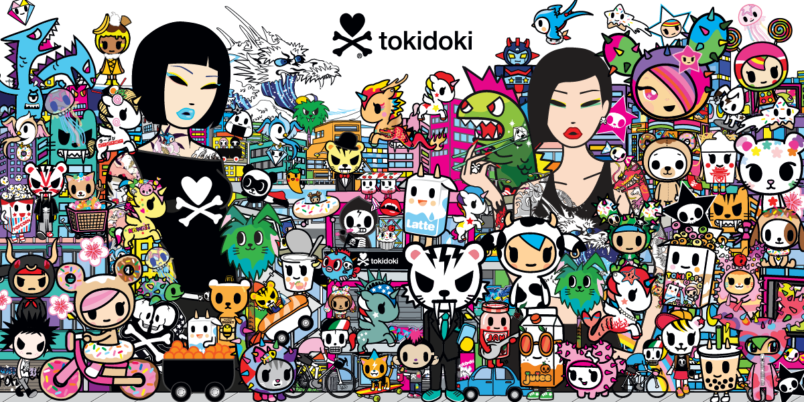

Sticker brands and their aesthetics
When I browse the sticker aisle of my favorite stationary stores, I often notice 4 big brands: Sanrio, San-x, Miffy, and Tokidoki. I want to give more of a background into the history of the companies, how or why they dominate the sticker aisle, and give my opinion on each of the brand’s aesthetics.
Sanrio
Starting in order of popularity (in my opinion) is Sanrio. Many know Sanrio through their superstar Hello Kitty and friends. Created in 1960s Japan, Sanrio began as Yamanashi Silk Company and didn’t start debuting characters till 1973 with their creation of Coro Chan then in 1974 with Hello Kitty. Today, Sanrio specializes in a variety of products such as toys, plushies, video games, fashion, gifts, and of course stationary. Sanrio now has a lineup of about 450 characters, making marketing and product release a breeze. In stores today the most commonly found characters to market are Hello Kitty, Cinnamoroll, Pompompurin, Kuromi, Kerropi, and My Melody. Because marketing for Sanrio is so abundant currently, I almost always find something of theirs I like. However, I find their American designs to differ too greatly to their Japanese designs. Sanrio products in Japan feature more muted colors and subtle patterns while Sanrio products made for America have brighter colors. Needless to say, Sanrio’s team of adorable mascots is what makes the brand so popular today in many forms of media.
San-X
San-X is another Japanese company that started out as only producing generic stationary originally under the name Chida Handler. It wasn’t until 1973 the company became San-X and began experimenting with scenic patterns and even a few illustrations. Only in 1987 did they debut their first character: Pinny-Mu, a small brown panda that graced products like notebooks, pencils, and even glassware. Currently, San-X’s most popular characters are Rilakkuma, Sumikko, Gurashi, and Corocoro Coronya. Despite the smaller roster of characters, I generally like San-X stickers more than that of Sanrio. Maybe because they don’t alter their domestic designs like Sanrio does, I find the colors and designs of San-X to be more delicate and softer. Many people confuse the two companies and understandably so! But San-X and Sanrio have no affiliation and, in my opinion, are pretty silent competitors.
Miffy
I was first introduced to Miffy in 2019 on a trip to the Netherlands, my sister and I got matching keychains of the bunny to add to our luggage in the Amsterdam Airport. Miffy the character was created by Dick Bruna in the Netherlands circa 1955 and has since become popular through children’s books and animated shows. However currently Miffy has taken over more popular media, being featured in modern art museums like the MoMA and collaborating with popular brands like Mulberry, Baccarat, and Uniqlo. With her newfound popularity, Miffy is steadily incorporating herself into stationary products as well, currently I only own a couple Miffy stamps and a few stickers, but I can’t wait to see her pop-up on the shelves more often.
I often see people confuse Miffy for a Japanese brand, her likeness and design similar to that of Hello Kitty. Interestingly enough, there has been a legal dispute between these two companies resulting in the early retirement of a Sanrio character. Read more about it in this article.
Tokidoki
Tokidoki was created in 2006 by Italian artist Simone Legno, whose work is heavily influenced by Japanese pop culture, manga, and anime. His art expresses a more vibrant, kitschy, and campy feel compared to innocent and cutesy brands such as San-X. Tokidoki has actually done many collabs with Sanrio. It’s probably thanks to their considerably different character designs that they can collab without confusing consumers too much. I appreciate the boldness of the Tokidoki brand, it’s refreshing to see a funkier, punk design when so many other companies choose to portray an overly childish form of cute.